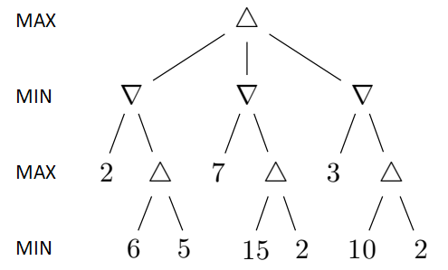
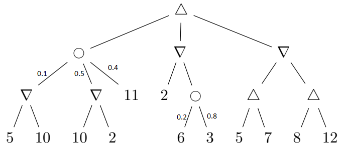
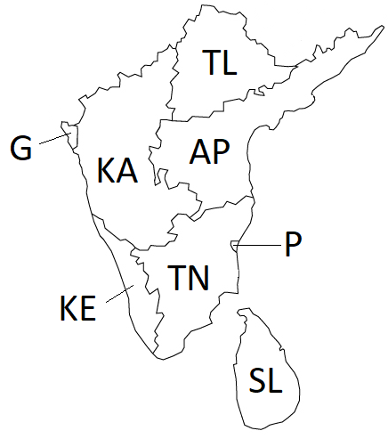

Assignment 2
Written Assignment - Game Playing & CSPs
Max possible score:
- 4308: 75 Points (+5 Points EC)
- 5360: 75 Points (+5 Points EC)
Task 1
Max:
[4308: 20 Points,
5360: 20 Points]

Figure 1: A game search tree.
a. (4308: 8 points, 5360: 8 points) In the game search tree of
Figure 1, if we use Minmax algorithm to find the strategy to use,
indicate the minmax values are for all the nodes. Also incidcate which
action the Minmax algorithm
will pick to exectute.
b. (4308: 7 points, 5360: 7 points)
In the game search tree of Figure 1, indicate what nodes will be pruned
using alpha-beta search, and what the minmax values are for
the rest of the nodes. Assume that, when given a choice, alpha-beta
search expands nodes in a left-to-right order. Finally incidcate which
action the Minmax algorithm
will pick to exectute. Is this answer different from part a.
c. (4308: 5 points, 5360: 5 points) This question is also on
the game search tree
of Figure 1. Suppose we are given some additional knowledge about the
game: the maximum utility value is 15 i.e., it is not mathematically
possible for the MAX player to get an outcome greater than 15 and the minimum utility value is 2 i.e., it is not mathematically
possible for the MIN player to get an outcome lower than 2. How can
this knowledge be used to further improve the efficiency of alpha-beta
search? Indicate the nodes that will be pruned using this improvement.
Again, assume that, when given a choice, alpha-beta search expands
nodes in a left-to-right order.
Task 2
Max: [4308: 10 Points,
5360: 10 Points]
Suppose that you want to implement an algorithm that will compete on a
two-player deterministic game of perfect information. Your opponent is
a supercomputer called DeepGreen. DeepGreen does not use Minimax. You
are given a library function DeepGreenMove(S), that takes any state S
as an argument, and returns the move that DeepGreen will choose for
that state S (more precisely, DeepGreenMove (S) returns the state
resulting from the opponent's move).
Write
an algorithm in pseudocode (following the style of the Minimax
pseudocode) that will always make an optimal decision given the
knowledge we have about DeepGreen. You are free to use the library
function DeepGreenMove(S) in your pseudocode. What advantage would this
algorithm have over Minimax? (if none, Justify).
Task 3
Max: [4308: 10 Points,
5360: 10 Points]

Figure 2: An Expectiminmax tree.
Find
the value of every non-terminal node in the expectiminmax tree given
above. Also indicate which action will be performed by the algoirithm.
What is lowest and highest possible outcome of a single game if the
minmax strategy is followed against an optimal opponent.
Task 4
Max: [4308: 35 Points (+5 Pts EC),
5360: 35 Points (+5 Pts EC)]
Consider the following map.

Figure 3: Outline of a Map
The problem is to color the sections such that no two sections
sharing a border have the same color. You are allowed to use the colors
(Red, Green, Blue).
Part a (8 points): Draw
the Constraint Graph for this problem.
Part b (10 points):
Assuming you are using Backtracking search to solve this problem and
that you are using both MRV and Degree heuristic to select the
variable, Which variable will be selected at each level of the search
tree [You do not need to draw the tree. Just let me know which variable
will be selected and why (MRV and degree values)]. Note: Multiple
possible correct answers. You only have to give one.
Part c (12 points): Assume you assign the color 'Red' to the
first
variable selected in part b. Show the steps involved in checking the
remaining legal values for all other variables using Arc Consistency.
Part d (5 points): Can you use structure of the problem to make
solving it more efficient?
Part e: (5 points EC): Give one valid solution to this
problem. (You just have to give the solution. No need to give all the
steps)